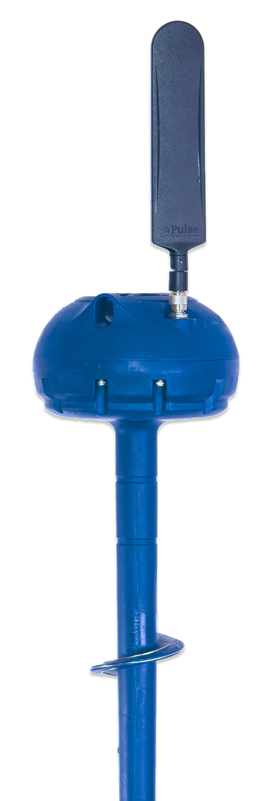

Digital Agronomy Platform
Make every crop decision count
Save on water, nutrients, and energy while increasing yields — with real-time soil sensing, precision irrigation, and enterprise-grade tools built for every scale of operation.
Request a Demo